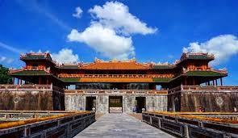
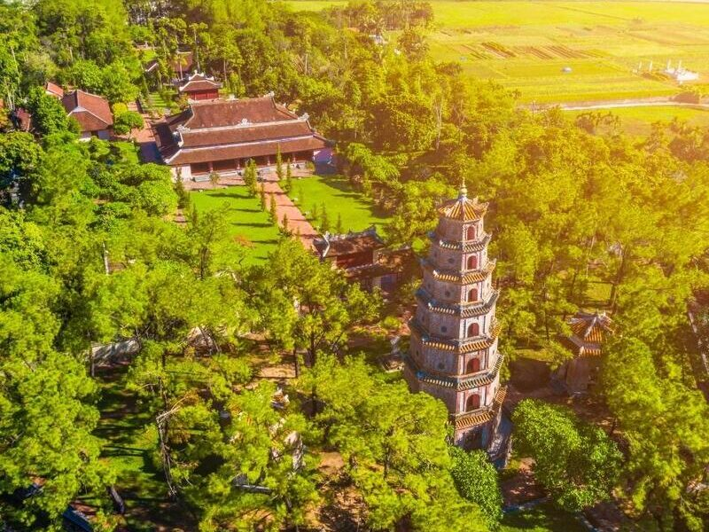
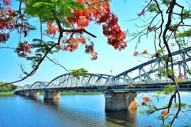
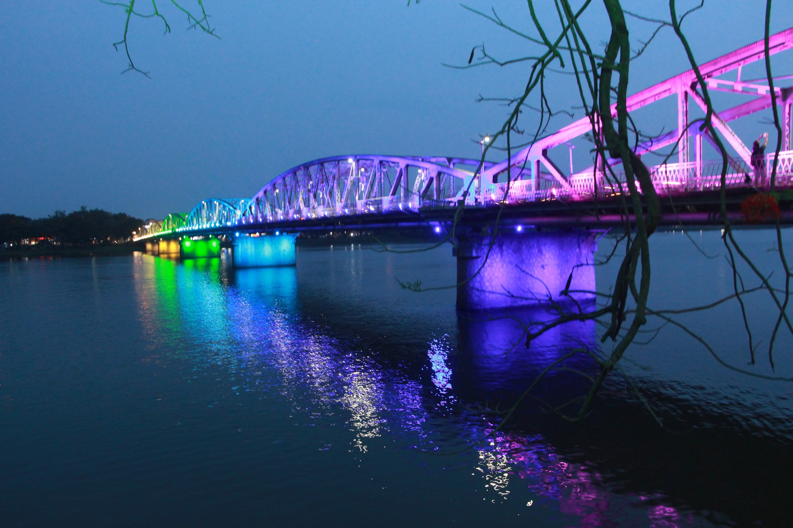
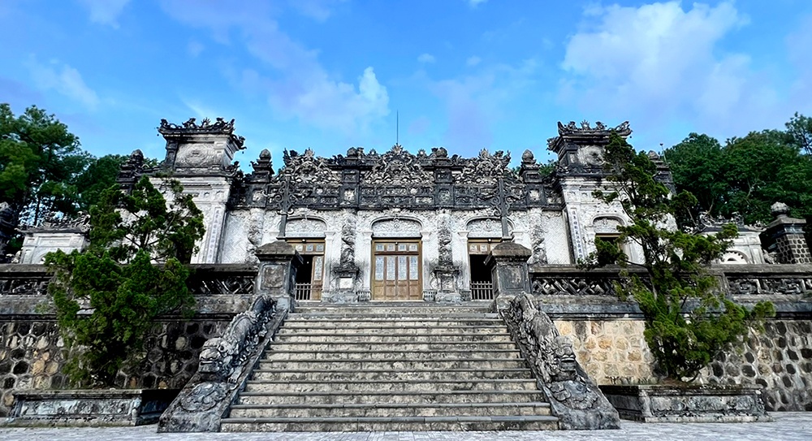
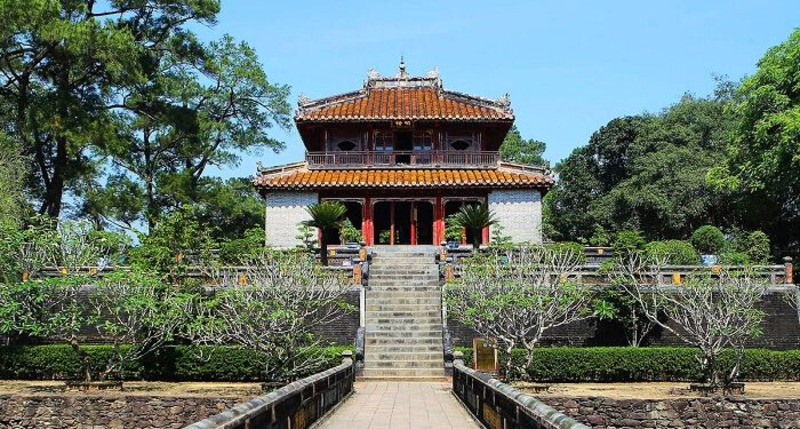
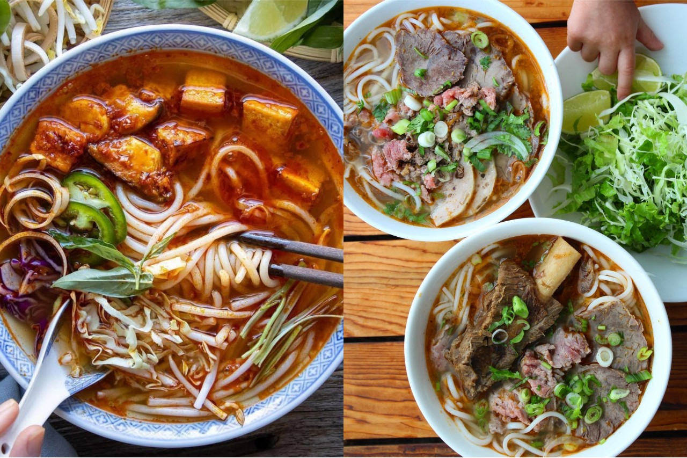
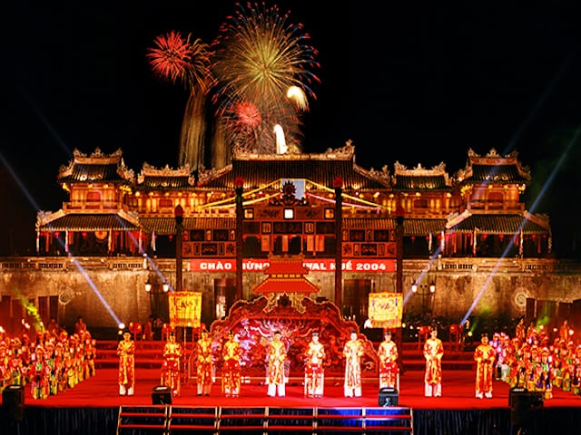

Giới Thiệu Tour
Huế là vùng đất cố đô nổi tiếng với vẻ đẹp trầm mặc, cổ kính và giàu chiều sâu văn hóa. Nơi đây lưu giữ nhiều công trình kiến trúc cung đình, lăng tẩm, chùa cổ và dòng sông Hương thơ mộng.
Tour Cố Đô Huế Trầm Mặc 3 ngày 2 đêm đưa du khách khám phá Đại Nội, chùa Thiên Mụ, lăng Khải Định, lăng Minh Mạng, sông Hương, cầu Trường Tiền và thưởng thức những món ăn đặc trưng của xứ Huế.
Điểm Nổi Bật

Đại Nội Huế
Khám phá quần thể kiến trúc cung đình cổ kính của triều Nguyễn.

Chùa Thiên Mụ
Ngôi chùa nổi tiếng bên dòng sông Hương với vẻ đẹp thanh tịnh.

Sông Hương Thơ Mộng
Ngắm cảnh dòng sông mềm mại gắn liền với nét đẹp dịu dàng của Huế.

Cầu Trường Tiền
Biểu tượng quen thuộc của Huế, đẹp nhất khi lên đèn về đêm.

Lăng Khải Định
Công trình lăng tẩm độc đáo với kiến trúc giao thoa Đông Tây.

Lăng Minh Mạng
Không gian cổ kính, hài hòa giữa kiến trúc, hồ nước và cây xanh.

Ẩm Thực Huế
Thưởng thức bún bò Huế, bánh bèo, bánh nậm, chè Huế và món cung đình.

Nhã Nhạc Cung Đình
Cảm nhận nét văn hóa cung đình đặc sắc qua âm nhạc truyền thống.
Lịch Trình Chi Tiết
Ngày 1 — Khởi Hành Đến Huế
07:00 — Khởi hành đến Huế hoặc đón khách tại sân bay, ga tàu.
11:30 — Dùng bữa trưa với món ăn đặc sản địa phương.
14:00 — Tham quan Đại Nội Huế và tìm hiểu lịch sử triều Nguyễn.
17:00 — Check-in cầu Trường Tiền và dạo bên bờ sông Hương.
19:00 — Ăn tối, tự do khám phá Huế về đêm.
Ngày 2 — Lăng Tẩm Và Văn Hóa Cố Đô
07:30 — Ăn sáng tại khách sạn.
08:30 — Tham quan chùa Thiên Mụ bên dòng sông Hương.
10:30 — Khám phá lăng Minh Mạng với không gian cổ kính, yên bình.
12:00 — Dùng bữa trưa tại nhà hàng địa phương.
14:00 — Tham quan lăng Khải Định với kiến trúc độc đáo.
18:30 — Ăn tối và thưởng thức các món đặc sản Huế.
Ngày 3 — Tạm Biệt Cố Đô Huế
07:30 — Ăn sáng, làm thủ tục trả phòng.
08:30 — Mua đặc sản Huế như mè xửng, trà cung đình, nón lá.
10:00 — Tự do chụp ảnh, dạo phố hoặc uống cà phê ven sông.
11:30 — Dùng bữa trưa nhẹ trước khi kết thúc hành trình.
13:00 — Xe đưa khách ra sân bay, ga tàu hoặc điểm hẹn ban đầu.
Bảng Giá Tour
| Đối Tượng | Giá / Người | Ghi Chú |
|---|---|---|
| Người lớn | 4.500.000 ₫ | Bao gồm xe đưa đón, khách sạn, bữa ăn và vé tham quan. |
| Trẻ em 5–11 tuổi | 3.200.000 ₫ | Có ghế ngồi riêng, ngủ chung phòng với người lớn. |
| Trẻ em dưới 5 tuổi | Miễn phí | Ngồi cùng người lớn, chưa bao gồm chi phí phát sinh riêng. |
| Phụ thu phòng đơn | +600.000 ₫ | Áp dụng khi khách muốn ở một mình một phòng. |
Giá đã gồm: xe du lịch, khách sạn, bữa ăn theo chương trình, vé tham quan, hướng dẫn viên và bảo hiểm du lịch cơ bản.
Đánh Giá Khách Hàng
4.8 / 5 ★★★★★
136 đánh giá từ khách đã tham gia tour.
Trần Minh Quân
Lịch trình hợp lý, hướng dẫn viên giới thiệu lịch sử rất dễ hiểu. Các điểm tham quan đều đẹp và có nhiều góc chụp ảnh.
Lê Hoài An
Đồ ăn Huế ngon, khách sạn sạch, tour phù hợp cho gia đình muốn đi nhẹ nhàng.
Nguyễn Thanh Vy
Huế rất đẹp và yên bình. Mình thích nhất Đại Nội và buổi chiều dạo bên sông Hương.